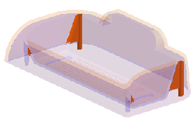
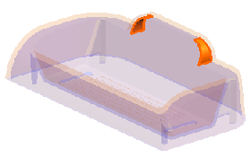

分析分型
模具部件验证将帮助您识别产品模型中的设计缺陷，检查区域提供了关于拔模角度、底切以及横截面的相关信息。
-
使用下列方法中的一种打开检查区域对话框：
-
点击注塑模向导工具条上的模具部件验证 ，然后点击模具部件验证工具条上的检查区域。
-
选择分析→模具部件验证→检查区域。
当前部件中包含一个体，它将被自动选中。
默认脱模方向为工作坐标系的 +ZC 轴，对于这个部件来说这个轴是正确的。
-
-
点击计算选项卡中的计算
 。
。 -
点击面选项卡。
在面拔模角组中，注意到默认的拔模角限制为3.0度，数量列显示部件中有180个面。
-
在拔模角限制输入框中键入1并回车。
将更新结果以反映拔模角的变化。
面选项卡显示了按照拔模角限制分类的面的数量，这些面中有：
-
拔模角大于或等于拔模角限制
-
拔模角小于拔模角限制
-
无拔模角(竖直面)
-
底切面
-
-
选中竖直复选框，然后旋转部件以查看高亮显示的面。
在盘面下方有底脚和肋板，四个肋版以及两个底脚中含有竖直(无拔模)面。
您可以向右移动未选定的面滑动条，以提升分析显示的可见性。
-
选中底切区域复选框。
盘面底部的两个圆柱面为底切面，底切表示它们含有与周围面的拔模角度相反的区域。
这两个面也被识别为交叉面，这是因为它们的一部分跨越了理论等斜线，即连接所有零度拔模点的曲线。
-
点击设置所有面的颜色
 。
。
型腔与型芯面将显示不同的颜色，以便软件在其它命令中可以快速识别它们。
-
点击确定。
-
关闭所有部件。